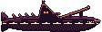
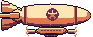
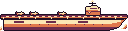
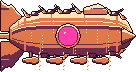
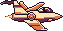

The story
The villain lost. You didn't get the memo.
Dr. Malvex, evil genius, has lost his war. The heroes, all white paint, blue stripes and gold stars, are hunting his last submarine across the sea. You are one of his bot planes, flung off the sub's catapult with one job: hold them off until he can get away.
Malvex rides along, cheering every kill from his corner of the screen and panicking whenever his precious sub takes a hit.





